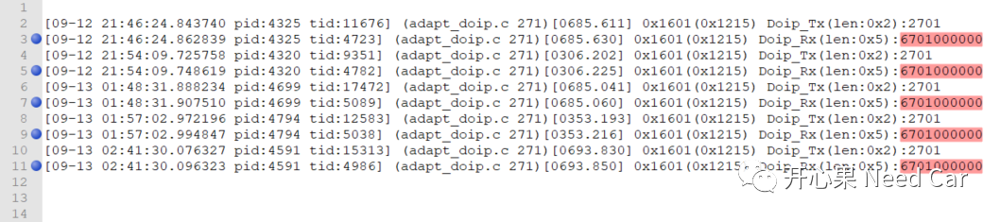
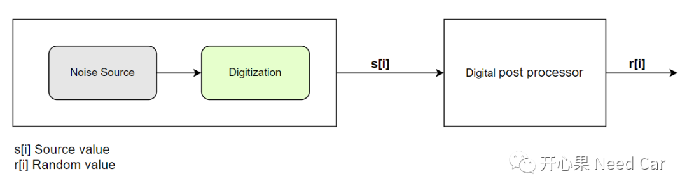
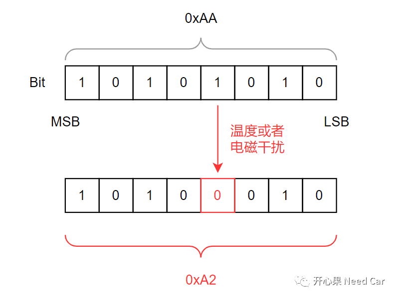
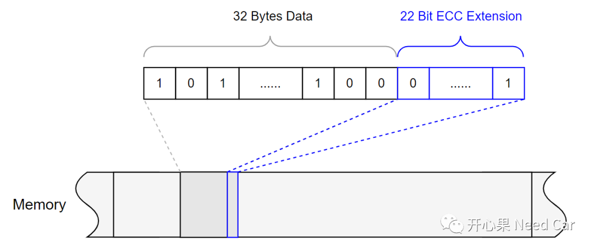
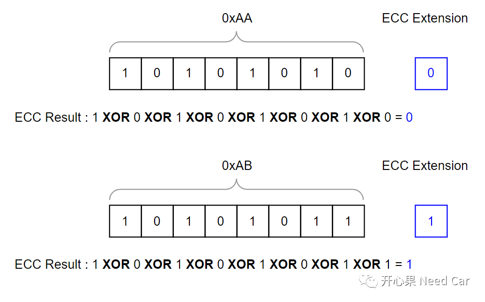
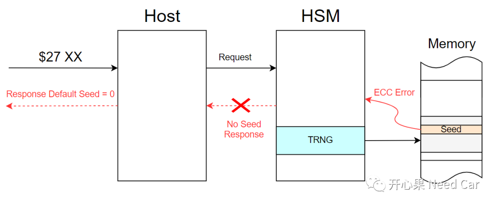
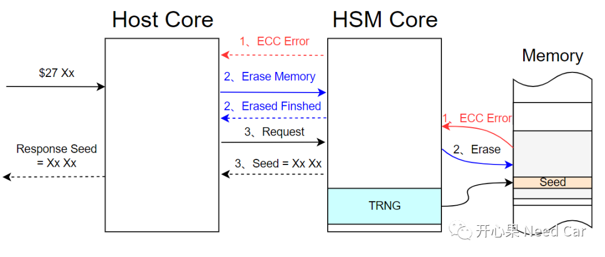

开心果 Need Car · 2023-10-16T11:15:00+08:00 · 微信原文
看到ECC（Error Correction Code），大家似乎已经想到，这个问题与内存相关。本文，分享一个工程问题：使用诊断$27（Security Access Service）服务，获取随机种子（Seed）时，由于HSM（Hardware Security Module）内存出现ECC错误，导致Seed返回全0，OTA失败。
1、问题描述

这里展开一下，获取的Seed有没有可以回复全0的场景呢？答：有，具体解释可以参考前文《UDS：Security Access service (0x27)，值得深聊》。
2、错误原因
由于之前传统获取Seed的做法，安全性不高。目前，整车中，越来越多的控制器加入信息安全功能，最常见获取Seed的做法就是通过HSM的TRNG（True Random Number Generator，真随机数生成器）模块获取真随机数，以此确保Seed的随机性，避免Seed被仿造。
在进行问题分析之前，先理解一些补充知识。
（一）TRNG生成真随机数原理
TRNG输出的随机数是基于物理随机现象或过程产生的，这些现象或过程具有固有的随机性。生成的随机数不能通过计算或可预测方法产生，而是来自不可预测的物理过程。比如，通过“热噪声”这一物理过程产生不可预测的源值，之后通过数字化处理，将源值(s[i])转换成随机值(r[i])，如下所示：

在我们开发使用内存的过程中，我们仅关注需要存储数据的内存本身，而不太关注存储ECC校验码对应的内存。目前，车端大部分控制器使用的芯片都支持ECC校验，以此确保数据存储的可靠性。为什么会有数据可靠性的担心呢？ECU断电后，Flash数据不是不丢失吗？数据不丢失，并不意味着存储的数据没有被外界物理或者环境因素破坏（eg：编程电压不稳定、芯片温度过高、电磁干扰等），进而存储了非预期的值。
比如：程序要读取某个内存位置的值，预期值0xAA，但是由于受到温度或者电磁干扰，某个Bit反转，使得数据变成非预期的0xA2，示意如下：




3、解决措施
既然问题出现在HSM，就应该由HSM负责到底，如果HSM存放Seed的内存区出现ECC Error，需要HSM将错误状态通知到Host，Host请求HSM擦除错误内存，之后HSM再提供随机种子。方案如下所示：

提示：MCU中，除了HSM的其他处理器均称为Host。
往期精彩回顾
如何基于HighTec将源文件（*.c）打包成静态库文件（*.a）